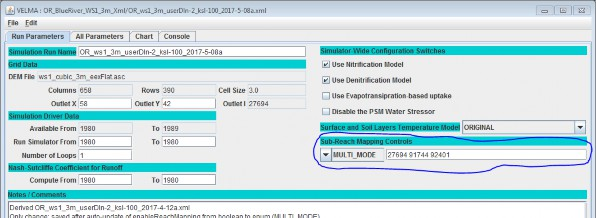

C.1 | VELMA Reach Mapping
Overview (Tutorial C.1 - VELMA Reach Mapping)
Tutorial "B.9_HowTo_JPDEM Sub-Reach Delineations" described how to use JPDEM to establish a set of x, y coordinates for user-delineated sub-watershed (sub-reach) outlets, in preparation for running VELMA in parallel mode to simulate daily streamflow for those sub-reach outlets.
The present tutorial, "Tutorial C.1 - VELMA Reach Mapping", describes how to incorporate the x, y sub-reach coordinates developed with JPDEM into VELMA.
Tutorial "Tutorial C.2 - How To Run VELMA Parallel Mode" describes how to run VELMA in parallel mode for generating daily streamflow results for the specified sub-watershed (sub-reach) outlets.
Aside from potential gains in computational efficiency, sub-reach delineations for running VELMA in parallel mode can help watershed managers tease apart streamflow responses to local and more distant upstream changes in land cover and land use.
The VELMA simulator engine can be configured to subdivide the watershed specified by the primary outlet (via the outx and outy configuration parameters) into several sub-reaches. Ordinarily, this feature is unnecessary, but it is useful and/or required for certain simulation situations. For example, sub-reaches must be specified when running a simulation via the VelmaParallelCmdLine. For additional details see "How to: Run VELMA in Parallel Mode. [Note: Sub-reaches must also be specified in simulation configuration .xml files that will be used for multi-scale simulation runs via the VelmaSimulatorAltCmdLine. Multi-scale simulations are still under development].
The simulation configuration's sub-reach behavior and the locations of the sub-reaches are specified by two, separate, but interrelated parameters:
- The enableReachMapping parameter specifies the mode (i.e. behavior) of the VELMA simulator with regard to sub-reach maps. Its value must be the exact text representation of one of the four valid modes: AUTO_MODE, LEGACY_MODE, MULTI_MODE or SOLO_MODE.
- The initialReachOutlets parameter specifies the linear cell indices of all of the sub-reaches. When specified, its value must be a whitespace-separated sequence of (The initialReachOutlets parameter value is ignored for some enableReachMapping modes.)
Specify the enableReachMapping mode first, then (depending upon whether the specified mode requires it or not) specify the initialReachOutlets parameter's list of sub-reach outlets.
| enableReachMapping value is … | initialReachOutlets value is … | VELMA Simulator behavior is … | Notes |
|---|---|---|---|
| AUTO_MODE | Ignored | Auto-generated sub- reaches. | Seldom required; may generate many sub- reaches |
| LEGACY_MODE | Ignored | No sub-outlets, single watershed. | This mode is deprecated. |
| MULTI_MODE | Required | Sub-outlets specified by initialReachOutlets | Use for Velma Parallel or Alt cmdline runs. |
| SOLO_MODE | Ignored | No sub-outlets, single watershed. | Most common mode for JVelma runs. |
Advisory/Warning:
When enableReachMapping is set to MULTI_MODE, every cell location specified for initialReachOutlets must be within the delineation of the final outlet.(The final outlet is the location specified by the configuration's outx and outy coordinate parameters, shows as "Outlet X" and "Outlet Y" in JVelma's "Run Parameters" tab.) Failure to satisfy this requirement will cause the simulation run to crash at the end of the first simulation year. This requirement may seem self-evident, but an easy way to violate it is to set the final outlet to the coordinates of one of the smaller sub-reach outlets listed in the initialReachOutlets parameter, in order run a smaller (faster-running) portion of a larger watershed. Relocating the final outlet to one of the sub-reach outlets will (almost always) result in one or more of the other sub-reach outlets not being within the (new, sub-reach) final outlet's delineation, thus violating the requirement.
Setting the Reach Mapping Parameters in JVelma GUI
You can set both of the reach mapping parameters in either JVelma's "Run Parameters" or from the "All Parameters" tab.
In the "Run Parameters" tab, underneath the label "Sub-Reach Mapping Controls" there is a drop-down selector for the enableReachMapping mode value, and a text field for the initialReachOutlets:
In the image above the enableReachMapping parameter is set to MULTI_MODE, and the
initialReachOutlets value is a 3-index sequence of cell indices: 27694 91744 92401.
In the "All Parameters" tab, you can quickly filter-limit the table to the reach mapping parameters by
selecting the "Sub-Reach Mapping" topic from the drop-down outline menu as show below:

Click-select topic "4.0 Sub-Reach Mapping", as shown by the blue circle and arrow above, to set the filter for reach mapping, and limit the All Parameters table rows to only reach mapping parameters (as shown in the following image):

Notice the reachOutletsFileName parameter and blank (yellow) value in the above image. The reachOutletsFileName parameter is a legacy setting that is ignored. If you run JVelma's Edit -> Remove Unused Parameters function, it will be deleted from the configuration.
Legacy Configurations Will (Mostly) Work Correctly
Earlier VELMA configurations specified Reach Mapping behavior differently.
- enableReachMapping was a boolean value (i.e. either true or false and nothing else).
- The reachOutletsFileName contents were combined with the initialReachOutlets value to form the final list of reach outlets.
When a legacy configuration .xml is loaded into JVelma or one of the VELMA command-line tools, the following updates occur:
- The enableReachMapping value is changed: true = MULTI_MODE, false = LEGACY_MODE.
- The reachOutletsFileName value is ignored.
- The initialReachOutlets value is untouched, and is used as-is if enableReachMapping's new mode value is MULTI_MODE.
This set of update rules means that most legacy simulations' Reach Mapping behavior will remain unchanged. The exceptions are configurations that contained reachOutletsFileName parameter values, and configurations that had enableReachMapping == true and initialReachOutlets == "".
The legacy VELMA simulator engine used enableReachMapping == true and initialReachOutlets == "" as an implicit indication of what is called AUTO_MODE. One of the goals of the new Reach Mapping parameters is making running in AUTO_MODE a very deliberate intention.
Legacy configurations with enableReachMapping == true and initialReachOutlets == "" now map to MULTI_MODE, but the empty initialReachOutlets value is forced to = the primary (outx, outy) outlet.
This means that the run will effectively be the same as manually setting SOLO_MODE.